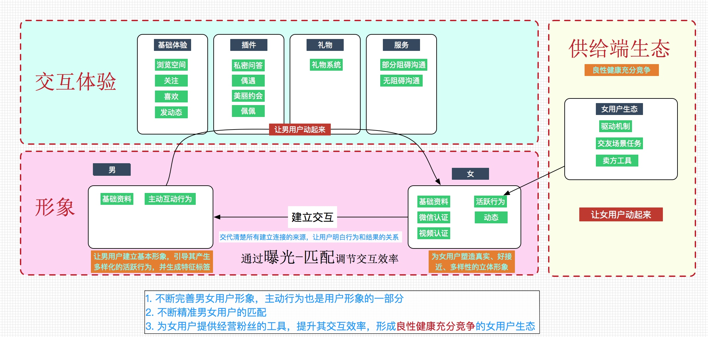
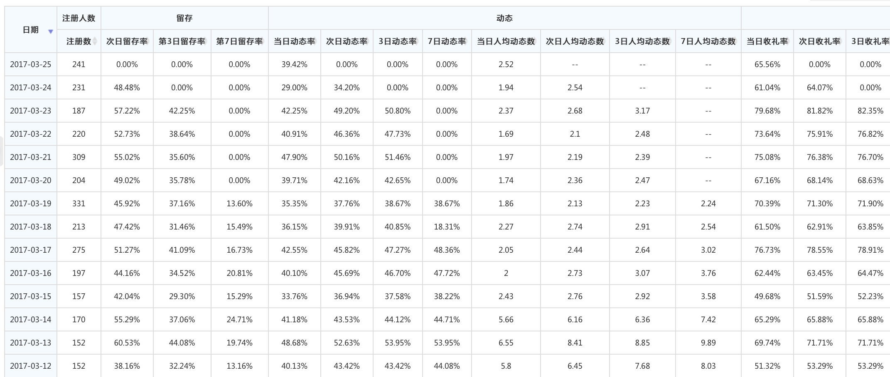
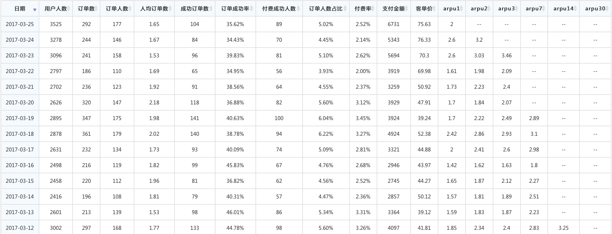

目标
长期目标
持续研发和运营满足用户和市场需求的婚恋交友产品
中期目标
- 通过生态运转建立新产品市场竞争能力（如：提升K值等）；
- 进一步优化组织和流程，为未来多产品和多平台做好准备：
- 加强团队人员的思想教育，提升团队战斗力（已完成）；
短期目标
- 第一个里程碑：K值（包括成本）追平多名称（4月15日前）；
- 第二个里程碑：K值能超过30%（6月15日前），同时IOS版本追平AD版本。
阶段里程碑
- 3月17日，arpu1 = 1.7， K = 2.2
- 3月31日，arpu1 = 2.5，K = 3.2
- 4月15日 arpu1 = 2.8 ， K = 3.6
业务思路
工作重心主要通过女用户生态产生动态和服务来完成415目标。
由于应用宝渠道的不稳定（应用宝官方做流量平台规则调整），最近成本、量级、来源波动比较大，数据也是深一脚浅一脚。 从最近的数据来看，针对415紧急任务，重点突击以下方面：
- 还有部分方案会继续提升arpu1，但感觉上很难超过多名称和有缘网底包的产品（策略重太多）。
- 重点的几个项目提升M值 （合理的免密，针对用户启动应用时推荐用户的策略）
- B类女用户的运营和卖方产品的优化，提升B用户效率。
- 大幅降低运营成本，目前运营成本占收入40%左右，下周将进行运营成本的降低方案，产品方案已经设计好，下周进入开发。
针对产品力后续的提升较为重要的几件事情：
- 用户形象塑造，生成男女用户几个维度特征标签（如：送礼很大方，认证，活跃度高等），在浏览过程中第一时间对用户产生兴趣，进而进入空间进行关注或互动行为；
- 女用户卖方产品的深化，通过产品引导让用户的活跃行为效率大幅度提升；
- 交互体验的继续深化，作深做透一两个插件。

业务进展
- 目前，B类女用户生态运营良好，D到B的转化稳定在10%以上，活跃B有较高的积极性，驱动机制卓有成效；
- 商业化框架和组件基础已经搭好，正在开发以交互发起的连接，提升聊天的预期强度和多样性。
- 下阶段着力引导用户的主动行为，通过主动行为建立起交互连接。
- 用户形象当前目标聚焦在视频认证上，展示用户中视频认证的比例明显增加，且同步增加了微信认证功能。
- 女用户对粉丝的运营的产品建设还没有跟上，用产品的手段提升用户经验粉丝的效率，会让男用户的交互变得更有效率，下周会安排产品人员重点突破。
- 拍拖iOS版本appstore审核通过，可通过iphone手机下载基础版本，但功能上落后AD两个礼拜左右（AD目前迭代周期为2天一版，正常渠道追不上）。
- 计划同步测试今日头条的流量，正在和渠道洽谈中；
- 技术构架优化以能支持大规模放量。
- 建立严格按预算体系运转的业务结构，截止3.20，累计亏损78.5万元，上半年预算还剩下101.5万
- 整合运营部、商务部资源，协同工作，搭建新产品测试平台，主要是将商业化框架同渠道运营同步；
自然女用户留存情况 （目标： 7日留存 12%）
自然女用户基本能稳定在50%左右，由于对b类用户的运营初见成效，7日留存能保持在15%以上（给赵安庆订的指标为12%，达成目标情况优秀）

K值情况 （目标：3.6）
由于应用宝自身的流量运营处于调整阶段，流量的不稳定导致获取成本和arpu波动都比较大，从arpu值的情况分析，由于前期的策略较多名称会轻不少（包括友缘底包），在arpu1上追赶貌似比较困难，但后续arpu的增长当前情况看起来势头还不错，下周会加入和产品结合更加紧密的正向化的低门槛付费，后续arpu的提升会更有势能。

男用户次日留存
目前男用户的次日留存还是稳定的增长中，目前还在采取一些产品方式进行调整，观察后续的效果。

组织进展
优化组织和流程，为未来多产品和多平台做好准备
- 『星火计划』骨干人员已经在当前的工作任务中承担了很重要的责任以马昊天、张丝雨、房园为代表的年轻人不但承担了较为明确的目标，工作积极性很高，据我观察，大家不是到了晚9点，就立马下班，经常是工作到晚11点左右；
- 吕思明、赵安庆、张颖、程远炜 在各自的任务分配上做的较为出色，这块我和刘博需要找一下自身是问题，怎么改变大家主观上对某些人员的定性判断。
- 围绕核心人员的队伍重建工作也在进行之中，招人进展初步比较顺利。
- 着手建立开发三部的人员梯队，引导新年建立组织意识，逐步建立起『业务骨干+技术骨干』共同负责业务目标的机制；